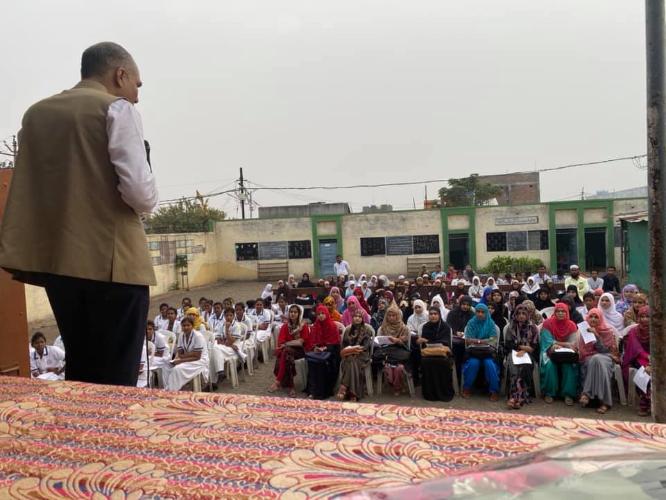
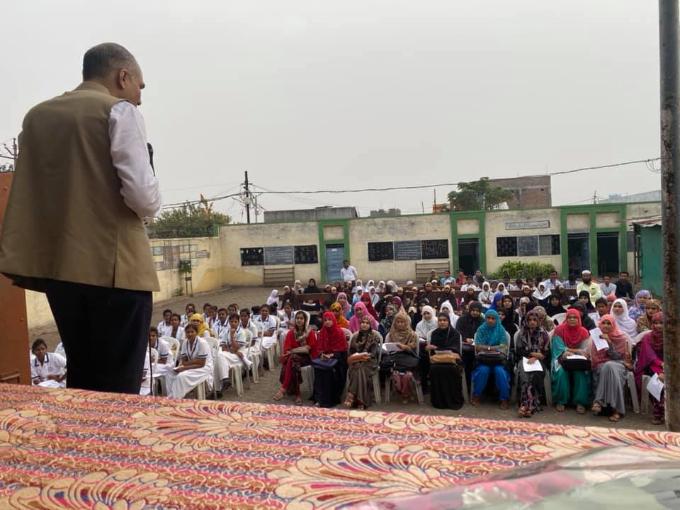

Helping People Help Themselves
Kriy8 Foundation- a non profit organization based in Mumbai- shall aim and strive to bring a meaningful difference in people’s lives through education, interaction, and guidance in matters of health and disease.
About Us

 

Our Mission & Objectives
Kriy8 Foundation is a grassroots movement dedicated to helping young people be better informed about health and lifestyle issues and help them to be an “alert and aware” generation of tomorrow. From this noble thought, new vistas emerged and led us to expand the scope of the organization to involve various patient groups. The Foundation aspires to work with like-minded individuals with the zeal and sincerity to do something different but purposeful to people around them, thereby "Helping People Help Themselves".
Objectives:
- - Disseminate information on adolescent health, hypertension, kidney diseases, and other lifestyle related illnesses
- - Guide and engage the future generation about matters of health and disease through various digital platforms
- - Assist deserving students to fulfill their aspirations in a structured manner
- - Assist deserving patients of advanced kidney disease to pursue quality healthcare
Our Initiatives
-
Kidney Disease
We spread awareness about kidney diseases that can develop from poor lifestyle choices.
Read More
Kriy8 Foundation is a grassroots movement dedicated to helping young people be better informed about health and lifestyle issues and help them to be an “alert and aware” generation of tomorrow. From this noble thought, new vistas emerged and led us to expand the scope of the organization to involve various patient groups. The Foundation aspires to work with like-minded individuals with the zeal and sincerity to do something different but purposeful to people around them, thereby "Helping People Help Themselves".
Our Testimonials
"Dissemination of health education and spreading awareness especially amongst the rural population is indeed the need of the hour and I must thank Kriy8 Foundation to have taken this initiative. Like last year, I would love to be a part of their community service campaigns year after year!"
Dr. Pranit Kakde
Nephrologist & Kidney Transplant Physician, Amravati, Maharashtra
"Kriy8 Foundation members created a wonderful program on awareness about salt intake for our high school students -the survey form was an eye opener and we all learned a lot -we are hoping the members return with more such enlightening programs in the future."
Mrs.Poonam
Senior Teacher, St.Francis School, Bhayander
"Adolescent health issues which could be precursors to lifestyle and modifiable diseases often remain unaddressed at the community level. Efforts of Kriy8 Foundation stand out in their commitment to pursue this aspect among others. I congratulate them and wish them good luck in future campaigns."
Dr.Nayan Chaudhari
Pediatrician, Fellowship in Nephrology (Pune)